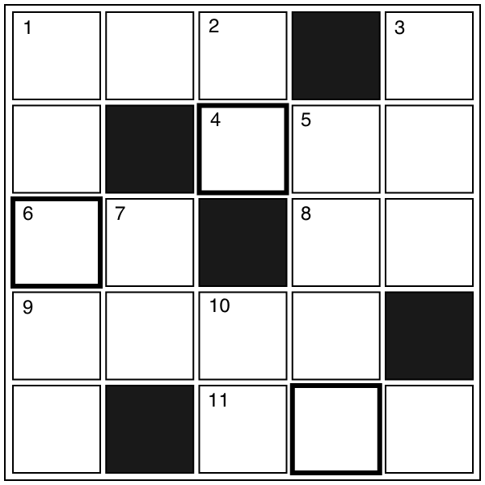

クロスワード
【→ PDF（印刷用）】

- タテのカギ
-
- １. 環境によって色を変える動物。
- ２. 角のある動物。馬と区別できる？
- ３. 恋人とすること。
- ５. 次の月のこと。
- ７. ドストエフスキー（ロシアの小説家）の小説『○○と罰』
- 10. 周りの土地よりも高さが非常に高いところのこと。
- ヨコのカギ
-
- １. 問題が起こらないように見ていること。○○○カメラ。
- ４. 『色』は外来語で？
- ６. 「２○○に並びなさい。」
- ８. 針に○○を通す。
- ９. 旅行に行ったときなどに買って、家族や他人におくるもの。
- 11. ゆかたを着て○○○に出かける。
【→ 解答を見る】